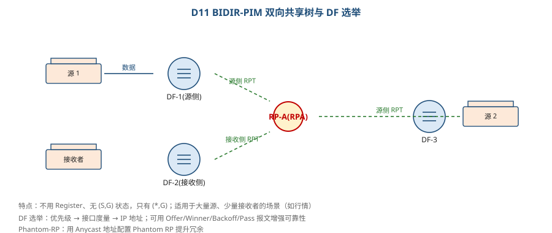

ch06 SSM 与 BIDIR-PIM
来源：Aweya Ch5.17–5.18（P.362–P.375，SSM）、Ch7（P.441–P.474，BIDIR-PIM）、Williamson Ch9（P.194–P.213，MOSPF）、iPexpert Ch6（P.6-1–6-33）、Volume II Ch5（SSM 选型） 配图：D10 Anycast-RP｜D11 BIDIR 双向树


学习目标
- 解释 SSM 的工作方式、四大优势与三种落地路径（原生 IGMPv3 / SSM-Mapping 静态 / SSM-Mapping DNS）；
- 描述 BIDIR-PIM 的双向共享树模型与 DF 选举；
- 说清 Phantom-RP 与 Anycast-RP 的差异；
- 掌握 SSM 与 BIDIR 的选型依据与共存限制；
- 排查 SSM/BIDIR 典型故障。
1. SSM（Source-Specific Multicast）
1.1 语义
接收者订阅的是 (G,S) 对，而不是"某个组的所有源"。
IGMPv3: Membership Report Group=239.1.1.1, Source=10.1.2.5 → 只收 10.1.2.5 的流
1.2 四大优势（与你的自有笔记完全一致）
| 优势 | 说明 |
|---|---|
| 无 RP | 不需要 RP、不需要 Register、不需要共享树 |
| 无 MSDP | 跨域天然可行（源与组的对应关系由应用层/IGMPv3 直接给出） |
| 无共享树 | 只有源树 (S,G)，路径最短、无 RP 瓶颈 |
| 源过滤安全 | 接收者只接受指定源 → 杜绝伪源注入 |
1.3 三条落地路径
| 路径 | 条件 | 配置 |
|---|---|---|
| A. 原生 IGMPv3 | 主机支持 IGMPv3，能表达 (G,S) | ip pim ssm range 232.0.0.0/8 |
| B. IGMPv2 + 静态 SSM-Mapping | 主机只支持 IGMPv2，但组→源关系固定 | ip igmp ssm-mapping static 239.1.1.1 10.1.2.5 |
| C. IGMPv2 + 动态 SSM-Mapping（DNS） | 组→源关系可由 DNS 解析（如 ssm.map.example.com） |
ip igmp ssm-mapping dynamic |
SSM-Mapping 的工作位置：在 Last-hop 路由器上，把主机发来的 (*,G) Report 翻译为 (G,S)，然后按 SSM 流程处理。
! 路由器侧
ip pim ssm range 232.0.0.0/8
ip igmp ssm-mapping static 239.1.1.1 10.1.2.5
ip igmp ssm-mapping static 239.1.1.1 10.1.2.6
注意：SSM-Mapping 必须在每一台最后一跳路由器上配置，否则同一组在不同接入点行为不一致。
1.4 SSM 的"伪 SSM"陷阱
很多设备文档写 "SSM 支持 232/8"，但实际 232/8 组地址 + IGMPv2 主机 = 完全不通（因为主机无法表达源）。这是现网最常见的 SSM 故障。
2. BIDIR-PIM（RFC 5015）

2.1 模型
- 只有 *(,G) 状态，没有 (S,G)；
- 没有 Register（源不需要注册到 RP）；
- 没有共享树/源树之分：RP 作为树的"中心"，源与接收者分别向 RP 建单向支路，合起来是"双向共享树"；
- 每个与 RP 相连的网段选出一个 DF（Designated Forwarder），负责本段与 RP 之间的转发。
2.2 术语（Aweya 7.3）
| 术语 | 含义 |
|---|---|
| RPA | RP Address，RP 的地址 |
| DF | Designated Forwarder，负责在本网段与 RP 间收发 |
| RPT | 由 DF 到 RP 的单向路径（Receiver-side / Source-side 两条） |
| BR | Bidir-capable Router，宣告 Bidir-Capable Option 的路由器 |
2.3 DF 选举（Aweya 7.8）
选举原则：
- 先比较 DF Priority（Hello 中的 Bidir-Capable Option 携带，数值大者胜）；
- 相同则比较 链路度量（RFC 4191）/ 接口度量（RFC 5015），小者胜；
- 再相同则比较 Router ID / IP 地址，大者胜（与 PIM DR 的"小者胜"相反！）。
可靠性增强报文（Aweya 7.8.4）：Offer / Winner / Backoff / Pass——用于在网络震荡时避免 DF 频繁切换。
ip pim bidir-enable
ip pim rp-address 10.1.1.1 bidir
interface Gi0/1
ip pim sparse-mode
ip pim bidir-enable
2.4 Phantom-RP（Aweya 7.10）
问题：BIDIR-PIM 依赖单一 RP 地址，RP 宕机即中断。
Phantom-RP 做法：用 Anycast 地址配置一个"虚拟 RP"，多个真实 RP 都宣告这个 Anycast 地址：
ip pim rp-address 10.100.100.100 bidir
! 每台真实 RP 上额外配置：
ip pim phantom-rp 10.100.100.100 bidir
与 Anycast-RP 的区别：
| Anycast-RP（PIM-SM） | Phantom-RP（BIDIR-PIM） | |
|---|---|---|
| 是否有 Register | 有 | 无 |
| 是否需要 MSDP 交换源 | 是 | 否 |
| 源侧行为 | 源注册到最近的 RP | 源直接向 RP 发组播 |
| 冗余粒度 | RP 对（源/收可能不同） | 任意 RP 均可服务任意源/收 |
2.5 BIDIR-PIM 的适用场景（选型依据）
适合：源多、接收者少，且拓扑接近"星型/对称"——典型是金融市场行情（成百上千个源网关 → 少量行情终端）。
不适合：
- 源少接收者多（用 SSM 或 PIM-SM）；
- 需要源过滤（SSM 的强项）；
- 需要跨域且不想引入 MSDP（SSM 更简单）。
与你的笔记一致："BiDir = only shared tree (only use for topology with many senders)"。
3. SSM / BIDIR / ASM 对照配置速查
! ---- ASM（PIM-SM）----
ip pim rp-address 10.1.1.1
ip pim rp-address 10.2.2.2 239.1.0.0 255.255.0.0
! ---- SSM ----
ip pim ssm range 232.0.0.0/8
ip igmp ssm-mapping static 239.1.1.1 10.1.2.5
! ---- BIDIR-PIM ----
ip pim rp-address 10.1.1.1 bidir
ip pim bidir-enable
interface Gi0/1
ip pim sparse-mode
ip pim bidir-enable
! ---- 混合模式（同一设备同时 ASM+SSM）----
ip pim rp-address 10.1.1.1
ip pim ssm range 232.0.0.0/8
4. 排障命令
show ip pim ssm range ! SSM 范围
show ip igmp ssm-mapping ! SSM 映射表
show ip igmp ssm-mapping group 239.1.1.1
show ip pim rp-address bidir ! BIDIR RP
show ip pim df ! DF 选举结果
show ip pim df detail ! DF 优先级/地址/状态
show ip mroute 239.1.1.1 detail ! BIDIR 下只有 (*,G)，无 (S,G)
show ip pim interface ! 看 bidir-enable 是否生效
debug ip pim bidir ! BIDIR 调试
5. 生产案例（6 例）
案例 6-1：SSM 组地址完全不通（最常见）
现象：业务使用 232.1.1.1，源正常发流，接收端完全收不到。
定位：
show ip pim ssm range ! 范围是否包含 232.1.1.1
show ip igmp groups 232.1.1.1 ! 是否有成员
show ip igmp ssm-mapping ! 映射是否存在
show ip mroute 232.1.1.1 ! 无表项
根因：接收主机只跑 IGMPv2，只能发 (*,G) Report，无法表达 (G,S)；且未配置 SSM-Mapping。
处置：主机升级 IGMPv3；或配置 ip igmp ssm-mapping static 232.1.1.1 <源IP>。
复盘：SSM 三要素（IGMPv3/SSM-Mapping + ip pim ssm range + 正确订阅）缺一不可。
案例 6-2：SSM-Mapping 只配了部分接入点
现象：同一组播业务在 A 楼正常，B 楼不通。
定位：show ip igmp ssm-mapping 在 A 楼路由器有、B 楼没有。
根因：SSM-Mapping 是本地 Last-hop 行为，不是全域状态；配置时漏了部分接入点。
处置：补齐所有 Last-hop 设备；用配置模板 + 审计脚本管控。
复盘：凡是"本地生效"的特性（SSM-Mapping、Query Solicitation、Fast Leave）都要单独列清单。
案例 6-3：BIDIR-PIM 源侧无流量
现象：BIDIR 域内接收端已加入 (*,G)，但收不到源流。
定位：show ip mroute 239.1.1.1 存在 (*,G) 但无 (S,G)；show ip pim df 显示源侧 DF 正常。
根因：BIDIR 中 源不注册，源必须直接向 RP 地址发送组播（目的 IP 就是组地址，但路由路径指向 RP）；源侧路由配置为"到组地址的下一跳是 RP"。
处置：源网关配置到组地址的路由指向 RPA；必要时在源侧加静态 mroute 指向 RPA。
复盘：BIDIR 的关键前提是"源侧和收侧都把 RP 当作树根"，源必须能"直达 RP"。
案例 6-4：BIDIR 的 DF 频繁切换
现象：组播周期性闪断；show ip pim df 中 DF 反复变化。
定位：debug ip pim bidir 显示 Offer/Winner 反复交换。
根因：DF 选举参数相同（优先级、度量、地址都相同），或链路震荡；缺少 Offer/Winner/Backoff 保护。
处置：显式配置不同 ip pim df priority；检查链路稳定性。
复盘：BIDIR 的选举比较顺序与 PIM DR 相反（地址大者胜），配置时容易搞混。
案例 6-5：Phantom-RP 配置后 DF 选举异常
现象：配置 ip pim phantom-rp 后，某个网段的 DF 消失。
定位：查看 show ip pim df，该网段无 DF；检查 ip pim rp-address ... bidir 与 ip pim phantom-rp 是否同地址。
根因：Phantom-RP 与 BIDIR RP 地址不一致，或 Phantom-RP 配置在非 RP 设备上。
处置：确保 Phantom-RP 地址与 BIDIR RP 地址一致，且只在真实 RP 上配置。
复盘：Phantom-RP 是"地址层面的复制"，配置必须与 BIDIR RP 对齐。
案例 6-6：SSM 与 ASM 混用导致组播"串流"
现象：某主机本应只收源 A 的流，却收到了源 B 的流（ASM 泄漏）。
定位：show ip igmp groups 显示主机以 IGMPv2 加入；show ip mroute 中出现 (*,G) 状态。
根因：主机以 IGMPv2 加入 (*,G)，且未配置 SSM-Mapping → 路由器按 ASM 处理，任何源都能进来。
处置：强制 IGMPv3 或配置 SSM-Mapping；对安全敏感的流用 ACL 限制源。
复盘：SSM 的安全前提是接收侧真的在表达 (G,S)；未配 SSM-Mapping 的 IGMPv2 主机等于降级为 ASM。
6. 自测清单
- SSM 的四大优势是什么？其中哪一个直接消除了 MSDP 的必要性？
- SSM-Mapping 有哪两种形式？各在什么场景使用？生效位置在哪台设备？
- 为什么"SSM + IGMPv2 主机"不通？这个坑在现网出现频率为什么这么高？
- BIDIR-PIM 中为什么没有 (S,G) 状态？源如何把流量送到接收者？
- DF 选举的比较顺序是什么？与 PIM DR 选举的差异在哪两处？
- Phantom-RP 与 Anycast-RP 的三点差异？
- 什么业务特征决定用 BIDIR 而不是 SSM？
7. 延伸阅读
- Aweya Ch7（P.441–P.474）、Ch5.17–5.18（P.362–P.375）
- iPexpert Ch6（P.6-1–6-33）：BIDIR-PIM 排障场景
- Williamson Ch9（P.194–P.213）：MOSPF（历史参考）
- 延伸：
RFC 4607（SSM）、RFC 7761 §6.3（SSM-Mapping）、RFC 5015（BIDIR-PIM）、RFC 7761 §4.7（Phantom-RP）